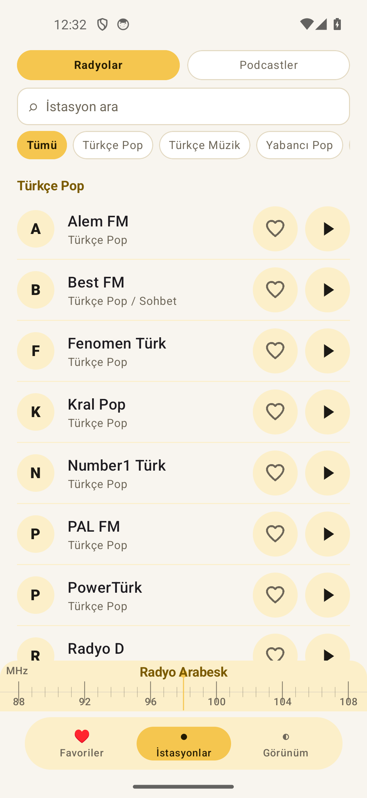

UYGULAMA · ANDROID
RadyoBox
Türkiye'nin radyoları, tek dokunuş uzağında.
RadyoBox, radyo istasyonları ve podcast yayınlarını keşfetmeyi kolaylaştıran bağımsız bir dizin ve internet üzerinden oynatıcıdır. Kendi radyo yayını üretmez; seçtiğiniz istasyonun canlı akışına bağlanır.
GOOGLE PLAY YAYINI HAZIRLANIYORGizlilik politikası
RADYOBOX / RADYO DİZİNİ

Seç · Dinle · Devam et